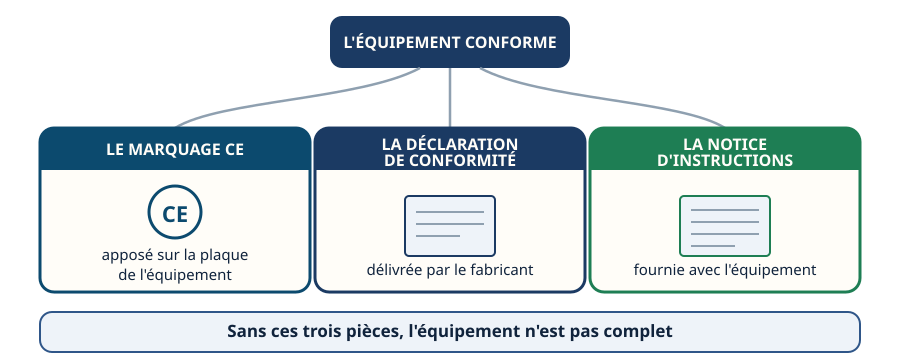
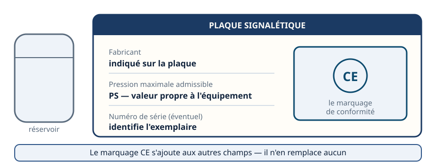
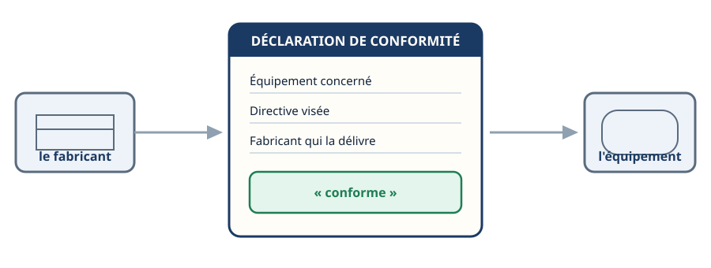
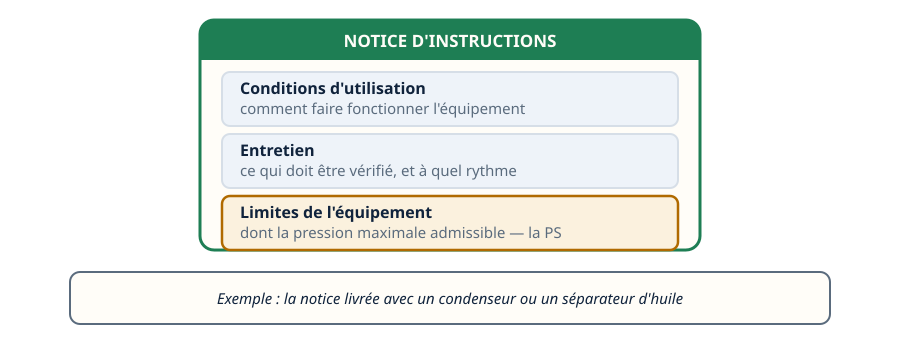
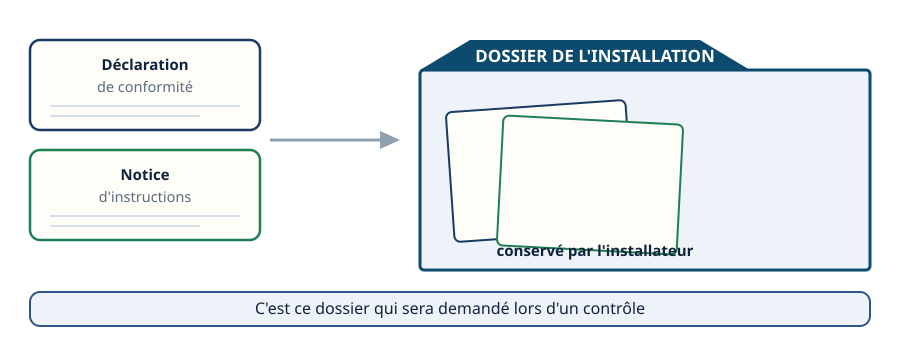
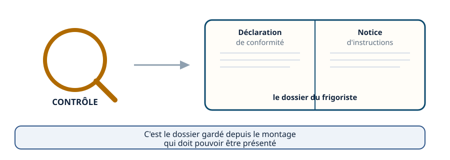
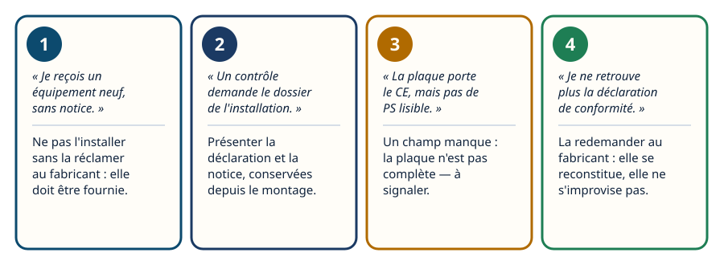
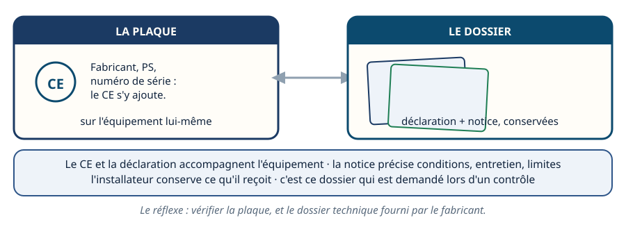

La DESP · niveau BTS
Marquage & papiers — ce qui accompagne l'équipement
Mini-station commentée · 8 écrans et 4 questions · environ 10 minutes
À la fin de la station, vous savez reconnaître le marquage CE sur la plaque signalétique, dire qui délivre la déclaration de conformité, ce que précise la notice d'instructions, et ce que vous devez conserver après un montage — le dossier qu'on vous demandera lors d'un contrôle.
Chaque écran peut être expliqué à voix haute : le bouton « Écouter » commente ce que vous voyez. Rien n'est dit qui ne soit aussi écrit.
Écran 1 sur 8
Trois pièces accompagnent l'équipement
Un équipement sous pression conforme à la directive DESP n'arrive jamais seul. Trois pièces l'accompagnent : le marquage CE, apposé sur sa plaque signalétique ; la déclaration de conformité, délivrée par le fabricant ; et la notice d'instructions, fournie avec l'équipement.
Cette station suit ces trois pièces, du fabricant jusqu'au dossier que vous devrez présenter sur un chantier.

Écran 2 sur 8
Le marquage CE, sur la plaque signalétique
Le marquage CE est apposé sur la plaque signalétique de l'équipement, à côté des autres informations qui y figurent : le fabricant, la pression maximale admissible — la PS — et, selon les équipements, un numéro de série.
Le marquage CE s'ajoute à ces champs, il n'en remplace aucun. Sur une bouteille de fluide frigorigène ou un réservoir, la PS est gravée à côté du CE : c'est elle qui donne la limite de l'équipement.

Écran 3 sur 8
La déclaration de conformité
La déclaration de conformité est un document délivré par le fabricant. Elle atteste que l'équipement respecte les exigences de la directive DESP. Elle identifie l'équipement concerné, la directive visée, et le fabricant qui la délivre.
Elle accompagne l'équipement dès sa livraison — c'est une pièce que vous recevez, jamais une pièce que vous rédigez vous-même.

Écran 4 sur 8
La notice d'instructions
La notice d'instructions doit être fournie avec l'équipement. Elle précise les conditions d'utilisation, les opérations d'entretien, et les limites de l'équipement — dont sa PS.
Sur le terrain : c'est la notice qui accompagne, par exemple, un condenseur ou un séparateur d'huile livré par le fabricant. Elle ne s'improvise pas et elle ne se devine pas — elle doit être fournie.

Écran 5 sur 8
Ce que l'installateur doit conserver
Une fois le montage terminé, l'installateur — vous, ou votre entreprise — doit conserver la documentation reçue avec l'équipement : la déclaration de conformité et la notice d'instructions. Ces deux pièces rejoignent le dossier de l'installation.
La durée pendant laquelle ce dossier doit être conservé est fixée par la réglementation en vigueur — à vérifier sur le texte applicable au moment du montage.

Écran 6 sur 8
Le dossier technique, présenté sur le chantier
Lors d'un contrôle ou d'une inspection, c'est ce dossier de l'installation qui est demandé : la déclaration de conformité et la notice d'instructions, celles reçues avec l'équipement et conservées depuis le montage.
Un frigoriste qui ne peut pas le présenter n'a pas de preuve à montrer — même si l'équipement, lui, porte bien son marquage CE.

Écran 7 sur 8
Le raisonnement : quatre situations de terrain
- « Je reçois un équipement neuf, sans notice. » → Ne pas l'installer sans la réclamer au fabricant : elle doit être fournie.
- « Un contrôle demande le dossier de l'installation. » → Présenter la déclaration de conformité et la notice, conservées depuis le montage.
- « La plaque porte le CE mais pas de PS lisible. » → Un champ manque : ce n'est pas une plaque complète, à signaler.
- « Je ne retrouve plus la déclaration de conformité. » → La redemander au fabricant : elle se reconstitue, elle ne s'improvise pas.

Écran 8 sur 8
Bilan et le réflexe
- Le marquage CE est apposé sur la plaque, à côté du fabricant, de la PS et du numéro de série.
- La déclaration de conformité est délivrée par le fabricant et accompagne l'équipement.
- La notice d'instructions précise conditions d'utilisation, entretien et limites — dont la PS.
- L'installateur conserve ce qu'il reçoit : ces pièces rejoignent le dossier de l'installation.
- C'est ce dossier qui est demandé lors d'un contrôle ou d'une inspection.
Le réflexe : vérifier la plaque, et vérifier le dossier technique fourni par le fabricant.

Question 1 sur 4
Le CE est sur la plaque, mais rien d'autre n'a été fourni. Que faire ?
Question 2 sur 4
Sur la plaque, à côté de quoi trouve-t-on le marquage CE ?
Question 3 sur 4
Que précise la notice d'instructions ?
Question 4 sur 4
Lors d'un contrôle sur chantier, que doit présenter le frigoriste ?
Les correspondances de la station
- NF EN 378 (même sous-ligne, en préparation) — la notice d'instructions et le marquage renvoient aussi aux exigences propres au fluide que fixe cette norme.
Cette station est en préparation sur le plan du réseau.